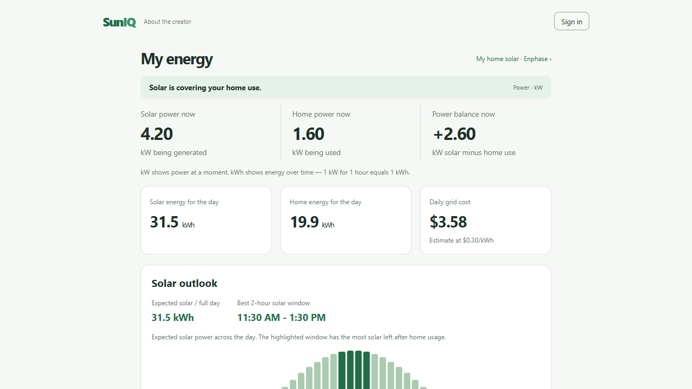
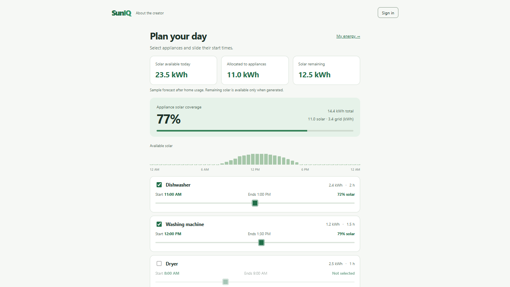
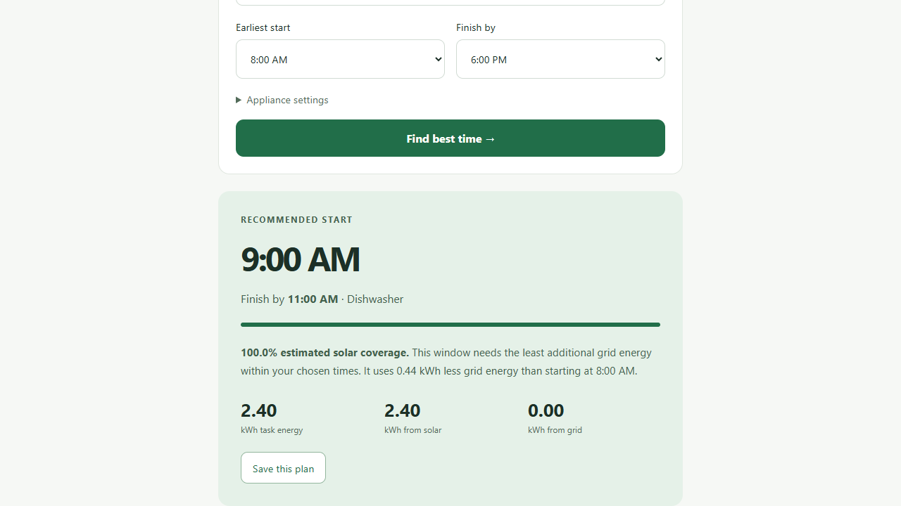

SunIQ
Understand your solar.
Plan when to use it.
Arush
Why SunIQ?
Solar generation changes during the day.
Appliances may run when sunlight is low.
Better timing can increase solar use.
For households with home solar
My home solar setup
The inverter turns solar electricity into usable home power.
Its label identifies the model and serial number.
Show your home inverter during the recording
Set up the inverter details
Choose the provider.
Enter the model and serial number.
Continue to the solar workspace.
Prototype setup only. Live inverter integration is a next step.
See the solar available
Compare solar power with home demand.
Explore the forecast across the day.
Illustrative sample data

Choose when appliances run
Select appliances.
Move their start times.
Compare solar and grid energy.
Sample forecast. Appliances are operated manually.

How the recommendation works
Check feasible half-hour starts.
Reserve household demand first.
Choose the earliest time with the least extra grid energy.
Python · Flask · HTML · CSS · JavaScript

Make solar easier to use
Today: explore timing with sample forecasts.
Next: authorized inverter data and weather forecasts.
Then: evaluate estimates against real measurements.
Planning estimates; no appliance control or guaranteed savings.